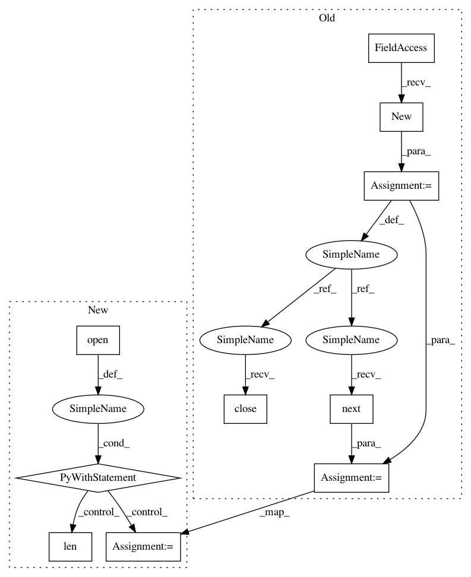

7b205efea6b504de04311bc55d109cd28d8f3e0c,OpenNMT/preprocess.py,,hasFeatures,#Any#,37
Before Change
opt = parser.parse_args()
def hasFeatures(filename):
reader = onmt.utils.FileReader.new(filename)
_, _, numFeatures = onmt.utils.Features.extract(reader.next())
reader.close()
return numFeatures > 0
def makeVocabulary(filename, size):
After Change
opt = parser.parse_args()
def hasFeatures(filename):
with open(filename) as f:
print(f.readline())
assert(False)
_, features = onmt.utils.Features.extract(f.readline())
return len(features) > 0
def makeVocabulary(filename, size):
wordVocab = onmt.utils.Dict(
[onmt.Constants.PAD_WORD, onmt.Constants.UNK_WORD,
onmt.Constants.BOS_WORD, onmt.Constants.EOS_WORD])
In pattern: SUPERPATTERN
Frequency: 4
Non-data size: 10
Instances
Project Name: OpenNMT/OpenNMT-py
Commit Name: 7b205efea6b504de04311bc55d109cd28d8f3e0c
Time: 2016-12-21
Author: alerer@fb.com
File Name: OpenNMT/preprocess.py
Class Name:
Method Name: hasFeatures
Project Name: pytorch/examples
Commit Name: 7b205efea6b504de04311bc55d109cd28d8f3e0c
Time: 2016-12-21
Author: alerer@fb.com
File Name: OpenNMT/preprocess.py
Class Name:
Method Name: hasFeatures
Project Name: OpenNMT/OpenNMT-py
Commit Name: 7b205efea6b504de04311bc55d109cd28d8f3e0c
Time: 2016-12-21
Author: alerer@fb.com
File Name: OpenNMT/preprocess.py
Class Name:
Method Name: makeVocabulary